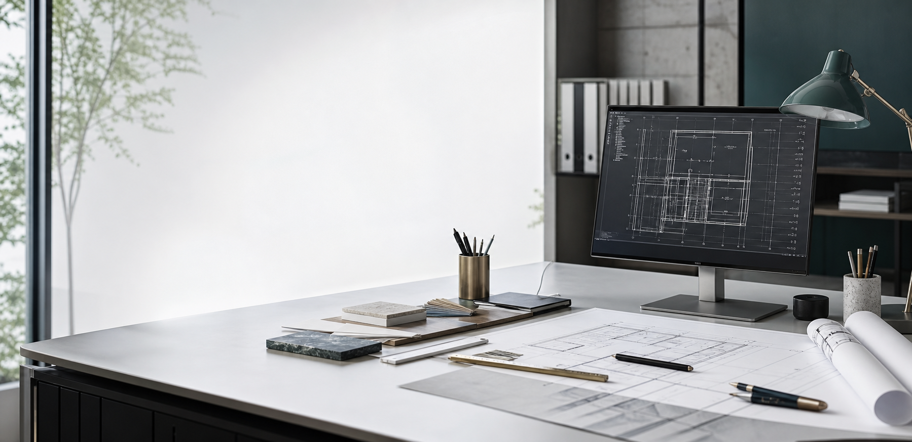
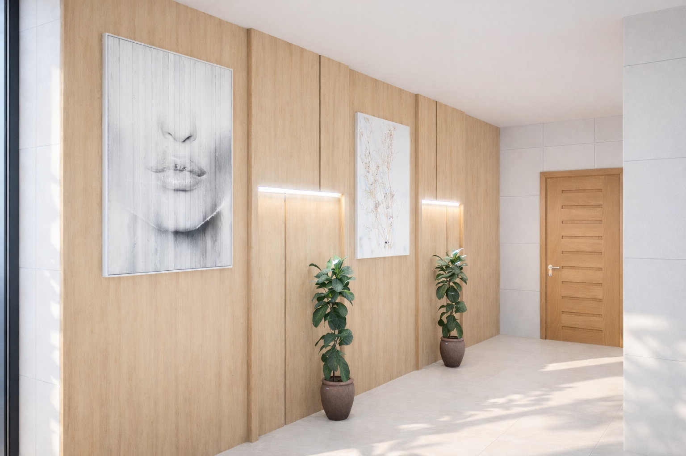

Projeto 2D
Plantas, vistas e layouts organizados para estudar o espaço e apresentar uma proposta com clareza.

Projeto 2D, modelagem 3D e apresentação visual
Desenvolvo estudos e apresentações para ambientes residenciais e comerciais, com organização visual e atenção aos detalhes que ajudam na tomada de decisão.
Sobre
Sou projetista em desenvolvimento profissional, com foco em criar soluções visuais e técnicas para ambientes residenciais e comerciais. Trabalho com organização, atenção às medidas e apresentação clara para facilitar decisões antes da execução.
Meu objetivo é ajudar você a visualizar melhor o espaço, organizar possibilidades e chegar a uma proposta mais segura, bonita e funcional.
Serviços
Plantas, vistas e layouts organizados para estudar o espaço e apresentar uma proposta com clareza.
Representações volumétricas para visualizar proporções, composição, materiais e atmosfera do ambiente.
Materiais organizados para explicar a ideia, comparar alternativas e facilitar conversas sobre o projeto.
Projetos em destaque
Projeto principal

Projeto

Projeto
Como posso ajudar
Transformo referências e necessidades em uma proposta visual mais clara.
Estudo disposição, circulação e composição para aproveitar melhor o espaço.
Preparo imagens e materiais para facilitar a conversa com clientes ou parceiros.
Processo
Contato
Me envie medidas, fotos do espaço e referências. Eu retorno com uma orientação inicial sobre o melhor formato para o seu projeto.